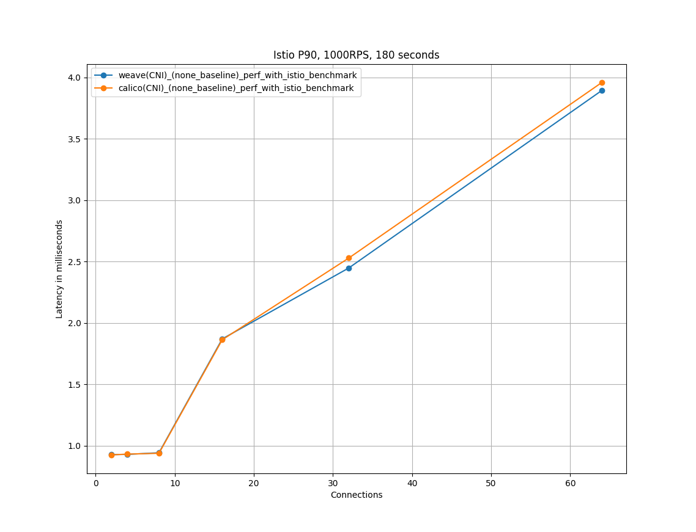

Reference Link: https://github.com/istio/tools/tree/master/perf/benchmark
# Prerequisitesl $ helm version version.BuildInfo{ Version:"v3.3.1" , GitCommit:"249e5215cde0c3fa72e27eb7a30e8d55c9696144" , GitTreeState:"clean" , GoVersion:"go1.14.7" }
# 下载l $ git clone https://github.com/istio/tools.git $ cd tools/perf/benchmark
# 部署l unset http_proxyunset https_proxyexport NAMESPACE = twopods-istioexport INTERCEPTION_MODE = REDIRECTexport ISTIO_INJECT = trueexport LOAD_GEN_TYPE = fortio( optional) export LOAD_GEN_TYPE = nighthawkexport DNS_DOMAIN = v104.qualistio.org./setup_test.sh
# 创建 pipenv 环境l $ cd perf/benchmark $ pipenv --three $ pipenv shell $ pipenv install // 如果遇到执行下面runner/runner.py脚本操作报找不到import包问题，需要再运行如下命令 $ python3 -m pip install pandas matplotlib pyyaml requests
# 测试l // Obtained the performance test at the 90th percentiles for an increasing number of concurrent connections( 2,4 ,8,16,32,64) and with a 1 kB payload at 1000 requests per second( RPS) . $ python runner/runner.py --conn 2,4 ,8,16,32,64 --qps 1000 --duration 180 --baseline --load_gen_type= fortio --telemetry_mode= none ( optional) $ python runner/runner.py --conn 2,4 ,8,16,32,64 --qps 1000 --duration 180 --baseline --load_gen_type= nighthawk --telemetry_mode= none
# 生成 csv 文件l $ kubectl get svc -n twopods-istio NAME TYPE CLUSTER-IP EXTERNAL-IP PORT( S) AGE fortioclient LoadBalancer 10.100 .26.23 < pending> 8080 :30476/TCP,8079:31699/TCP,8078:31654/TCP,8077:30330/TCP,8076:32679/TCP,9999:30027/TCP,9076:32267/TCP 42m fortioserver ClusterIP 10.102 .28.144 < none> 8080 /TCP,8079/TCP,8078/TCP,8077/TCP,8076/TCP,9999/TCP,9076/TCP $ export FORTIO_CLIENT_URL = http://localhost:32267 $ python ./runner/fortio.py $FORTIO_CLIENT_URL --csv StartTime,ActualDuration,Labels,NumThreads,ActualQPS,p50,p90,p99,p999
# 修改 graph_plotter.py 脚本# 第一处修改:n $ vim graph_plotter/ graph_plotter. py 44 plt. xlabel( get_x_label( args) ) 45 plt. ylabel( get_y_label( args) ) 46 plt. legend( ) 47 plt. grid( ) 48 plt. title( "Istio P90, 1000RPS, 180 seconds" ) 49 plt. savefig( args. graph_title, dpi= dpi) 50 plt. show( )
# 第二处修改:n def get_data_helper( df, query_list, query_str, telemetry_mode, metric_name) : y_series_data = [ ] for ql in query_list: query_str = "ActualQPS==1000 and NumThreads=={ql} and Labels.str.endswith('{telemetry_mode}')" . format ( ql= ql, telemetry_mode= telemetry_mode) data = df. query( query_str) try : data[ metric_name] . head( ) . empty except KeyError as e: y_series_data. append( None ) else : if not data[ metric_name] . head( ) . empty: if metric_name. startswith( 'cpu' ) or metric_name. startswith( 'mem' ) : y_series_data. append( data[ metric_name] . head( 1 ) . values[ 0 ] ) else : y_series_data. append( data[ metric_name] . head( 1 ) . values[ 0 ] / 1000 ) else : y_series_data. append( None ) return y_series_data
# 画图
Obtained the performance test at the 90th percentiles for an increasing number of concurrent connections(2,4,8,16,32,64) and with a 1 kB payload at 1000 requests per second.
l $ python3 ./graph_plotter/graph_plotter.py --graph_type= latency-p90 --x_axis= conn --telemetry_modes= none_baseline,none_both --query_list= 2,4 ,8,16,32,64 --query_str= ActualQPS== 1000 --csv_filepath= /tmp/tmptqdbk703.csv --graph_title= ./weave_plotter_output.png $ python3 ./graph_plotter/graph_plotter.py --graph_type= latency-p90 --x_axis= conn --telemetry_modes= none_baseline,none_both --query_list= 2,4 ,8,16,32,64 --query_str= ActualQPS== 1000 --csv_filepath= /tmp/tmp7giam_5i.csv --graph_title= ./calico_plotter_output.png
# 卸载l $ kubectl delete -f tmp/twopods-istio.yaml -n twopods-istio $ kubectl delete ns twopods-istio
# (Optional)Prometheus在 istio istio-1.8.1/samples/addons 目录新建了如下 yaml 文件把 prometheus 的端口映射到 host 主机.
l $ cat prometheus-NodePort.yaml apiVersion: v1 kind: Service metadata: labels: component: "server" app: prometheus release: prometheus chart: prometheus-11.16.2 heritage: Helm name: prometheus-nodeport namespace: istio-system spec: ports: - name: http port: 9090 protocol: TCP targetPort: 9090 selector: component: "server" app: prometheus release: prometheus sessionAffinity: None type: "NodePort" $ kubectl apply -f prometheus-NodePort.yaml
# csv 转 markdown 脚本cat all-results.csv
StartTime,ActualDuration,Labels,NumThreads,ActualQPS,p50,p90,p99,p999
2021-07-08T03:00:32.123633281Z,180,e379485c_qps_1000_c_2_1024_none_baseline,2,1000,633,927,994,1630
2021-07-08T03:03:32.552909916Z,180,e379485c_qps_1000_c_2_1024_none_both,2,1000,1535,1980,2894,3493
2021-07-08T03:06:33.127271331Z,180,e379485c_qps_1000_c_4_1024_none_baseline,4,1000,629,929,996,1893
2021-07-08T03:09:33.547611543Z,180,e379485c_qps_1000_c_4_1024_none_both,4,1000,1888,2793,2995,4715
2021-07-08T03:12:33.953340272Z,180,e379485c_qps_1000_c_8_1024_none_baseline,8,1000,665,942,1416,1998
2021-07-08T03:15:34.39170438Z,180,e379485c_qps_1000_c_8_1024_none_both,8,1000,3081,3827,3995,6173
2021-07-08T03:18:35.020425077Z,180,e379485c_qps_1000_c_16_1024_none_baseline,16,1000,1321,1870,1994,2871
2021-07-08T03:21:35.488938053Z,180,e379485c_qps_1000_c_16_1024_none_both,16,1000,5214,6386,6991,8800
2021-07-08T03:24:35.893324186Z,180,e379485c_qps_1000_c_32_1024_none_baseline,32,1000,1581,2448,3643,4181
2021-07-08T03:27:36.366429299Z,180,e379485c_qps_1000_c_32_1024_none_both,32,1000,9014,10532,11971,14664
2021-07-08T03:30:37.054477154Z,179,e379485c_qps_1000_c_64_1024_none_baseline,64,1000,2561,3895,5633,8073
2021-07-08T03:33:37.591317915Z,179,e379485c_qps_1000_c_64_1024_none_both,64,1000,16425,18346,21529,24656
2021-07-08T10:22:59.650647926Z,180,47e02b90_qps_1000_c_2_1024_none_baseline,2,1000,619,925,994,1685
2021-07-08T10:26:00.023923405Z,180,47e02b90_qps_1000_c_2_1024_none_both,2,1000,1544,2085,2922,3569
2021-07-08T10:29:00.5336073Z,180,47e02b90_qps_1000_c_4_1024_none_baseline,4,1000,641,931,997,1899
2021-07-08T10:32:00.926507967Z,180,47e02b90_qps_1000_c_4_1024_none_both,4,1000,1884,2798,3103,4726
2021-07-08T10:35:01.281884063Z,180,47e02b90_qps_1000_c_8_1024_none_baseline,8,1000,662,938,1121,2227
2021-07-08T10:38:01.659107592Z,180,47e02b90_qps_1000_c_8_1024_none_both,8,1000,4748,5754,6137,8558
2021-07-08T10:41:02.175849835Z,180,47e02b90_qps_1000_c_16_1024_none_baseline,16,1000,1283,1863,1993,2892
2021-07-08T10:44:02.568365775Z,180,47e02b90_qps_1000_c_16_1024_none_both,16,1000,5083,6026,7857,10078
2021-07-08T10:47:03.014074722Z,180,47e02b90_qps_1000_c_32_1024_none_baseline,32,1000,1594,2529,3537,4557
2021-07-08T10:50:03.455990894Z,180,47e02b90_qps_1000_c_32_1024_none_both,32,1000,12420,14040,15979,19009
2021-07-08T10:53:04.043806415Z,179,47e02b90_qps_1000_c_64_1024_none_baseline,64,1000,2771,3960,5281,7133
2021-07-08T10:56:04.516012475Z,179,47e02b90_qps_1000_c_64_1024_none_both,64,1000,18706,23763,26954,29338
cat csv.py
n def to_table ( filename= 'all-results.csv' , rept= ',' ) : '''将符号分割文本转化为markdown表格形式 parameter:需要转化的文件名(str),文本的分割符号(str) ''' file_obj_r = open ( filename, 'r' ) file_obj_w = open ( 'new' + filename, 'w' ) count = 0 for line in file_obj_r: rec = line. split( rept) new_rec = [ i. strip( ) for i in rec] new_rec = '|' + '|' . join( new_rec) + '|' + '\n' file_obj_w. write( new_rec) if count == 0 : head_rec = '|' for i in rec: head_rec += '---|' head_rec += '\n' file_obj_w. write( head_rec) count += 1 file_obj_r. close( ) file_obj_w. close( ) if __name__ == '__main__' : import sys try : to_table( sys. argv[ 1 ] , sys. argv[ 2 ] ) except : to_table( )
运行:
l python csv.py all-results.csv
# 自己编写画图脚本# all-results.csvcat all-results.csv
StartTime ActualDuration Labels NumThreads ActualQPS p50 p90 p99 p999 2021-07-08T03:00:32.123633281Z 180 e379485c_qps_1000_c_2_1024_none_baseline 2 1000 633 927 994 1630 2021-07-08T03:03:32.552909916Z 180 e379485c_qps_1000_c_2_1024_none_both 2 1000 1535 1980 2894 3493 2021-07-08T03:06:33.127271331Z 180 e379485c_qps_1000_c_4_1024_none_baseline 4 1000 629 929 996 1893 2021-07-08T03:09:33.547611543Z 180 e379485c_qps_1000_c_4_1024_none_both 4 1000 1888 2793 2995 4715 2021-07-08T03:12:33.953340272Z 180 e379485c_qps_1000_c_8_1024_none_baseline 8 1000 665 942 1416 1998 2021-07-08T03:15:34.39170438Z 180 e379485c_qps_1000_c_8_1024_none_both 8 1000 3081 3827 3995 6173 2021-07-08T03:18:35.020425077Z 180 e379485c_qps_1000_c_16_1024_none_baseline 16 1000 1321 1870 1994 2871 2021-07-08T03:21:35.488938053Z 180 e379485c_qps_1000_c_16_1024_none_both 16 1000 5214 6386 6991 8800 2021-07-08T03:24:35.893324186Z 180 e379485c_qps_1000_c_32_1024_none_baseline 32 1000 1581 2448 3643 4181 2021-07-08T03:27:36.366429299Z 180 e379485c_qps_1000_c_32_1024_none_both 32 1000 9014 10532 11971 14664 2021-07-08T03:30:37.054477154Z 179 e379485c_qps_1000_c_64_1024_none_baseline 64 1000 2561 3895 5633 8073 2021-07-08T03:33:37.591317915Z 179 e379485c_qps_1000_c_64_1024_none_both 64 1000 16425 18346 21529 24656 2021-07-08T10:22:59.650647926Z 180 47e02b90_qps_1000_c_2_1024_none_baseline 2 1000 619 925 994 1685 2021-07-08T10:26:00.023923405Z 180 47e02b90_qps_1000_c_2_1024_none_both 2 1000 1544 2085 2922 3569 2021-07-08T10:29:00.5336073Z 180 47e02b90_qps_1000_c_4_1024_none_baseline 4 1000 641 931 997 1899 2021-07-08T10:32:00.926507967Z 180 47e02b90_qps_1000_c_4_1024_none_both 4 1000 1884 2798 3103 4726 2021-07-08T10:35:01.281884063Z 180 47e02b90_qps_1000_c_8_1024_none_baseline 8 1000 662 938 1121 2227 2021-07-08T10:38:01.659107592Z 180 47e02b90_qps_1000_c_8_1024_none_both 8 1000 4748 5754 6137 8558 2021-07-08T10:41:02.175849835Z 180 47e02b90_qps_1000_c_16_1024_none_baseline 16 1000 1283 1863 1993 2892 2021-07-08T10:44:02.568365775Z 180 47e02b90_qps_1000_c_16_1024_none_both 16 1000 5083 6026 7857 10078 2021-07-08T10:47:03.014074722Z 180 47e02b90_qps_1000_c_32_1024_none_baseline 32 1000 1594 2529 3537 4557 2021-07-08T10:50:03.455990894Z 180 47e02b90_qps_1000_c_32_1024_none_both 32 1000 12420 14040 15979 19009 2021-07-08T10:53:04.043806415Z 179 47e02b90_qps_1000_c_64_1024_none_baseline 64 1000 2771 3960 5281 7133 2021-07-08T10:56:04.516012475Z 179 47e02b90_qps_1000_c_64_1024_none_both 64 1000 18706 23763 26954 29338
# graph_plotter.py# cat graph_plotter.pyl import sysimport argparseimport pandas as pdimport matplotlib.pyplot as pltfrom typing import List def get_metric_name( args) : if args.graph_type.startswith( "latency" ) : return args.graph_type.split( "-" ) [ 1 ] return metric_dict[ args.graph_type] def get_data( df, query_list, startstr, telemetry_mode, metric_name) : y_series_data = [ ] for ql in query_list: query_str = "ActualQPS==1000 and NumThreads=={ql} and Labels.str.contains('{startstr}') and Labels.str.endswith('{telemetry_mode}')" .format( ql= ql, startstr = startstr, telemetry_mode = telemetry_mode) data = df.query( query_str) try: data[ metric_name] .head( ) .empty except KeyError as e: y_series_data.append( None) else: y_series_data.append( data[ metric_name] .head( 1 ) .values[ 0 ] / 1000 ) return y_series_data def plotter( args) : df = pd.read_csv( args.csv_filepath) metric_name = get_metric_name( args) y_data = { } for cni_mode in args.cni: global startstr startstr = "" if cni_mode == "weave" : startstr = "e379485c" if cni_mode == "calico" : startstr = "47e02b90" y_data[ cni_mode] = get_data( df, args.query_list, startstr, args.telemetry_mode, metric_name) dpi = 100 plt.figure( figsize= ( 1138 / dpi, 871 / dpi) , dpi = dpi) for key, val in y_data.items( ) : plt.plot( args.query_list, val, marker = 'o' , label = key+"(CNI)_" +"(none_" +args.telemetry_mode + ")_" + "perf_with_istio_benchmark" ) plt.xlabel( "Connections" ) plt.ylabel( "Latency in milliseconds" ) plt.legend( ) plt.title( args.title) plt.grid( ) plt.savefig( args.telemetry_mode + "(CNI)_perf_with_istio_benchmark.png" , dpi = dpi) def int_list( lst) : return [ int( i) for i in lst.split( "," ) ] def string_list( lst) : return [ str( i) for i in lst.split( "," ) ] def get_parser( ) : parser = argparse.ArgumentParser( "Istio performance benchmark CSV file graph plotter." ) parser.add_argument( "--query_list" , help = "Specify the qps or conn range you want to plot based on the CSV file." "For example, conn_query_list=[2, 4, 8, 16, 32, 64], qps_query_list=[10, 100, 200, 400, 800, 1000]." , type = int_list ) parser.add_argument( "--graph_type" , help = "Choose from one of them: [latency-p50, latency-p90, latency-p99, latency-p999, " "cpu-client, cpu-server, mem-client, mem-server]." ) parser.add_argument( "--telemetry_mode" , help = "This is a list of perf test labels, currently it can be any combinations from the follow supported modes:" "[none_mtls_baseline, none_mtls_both, v2-sd-full-nullvm_both, v2-stats-nullvm_both, " "v2-stats-wasm_both, v2-sd-nologging-nullvm_both]." , type = str ) parser.add_argument( "--csv_filepath" , help = "The path of the CSV file." ) parser.add_argument( "--cni" , help = "CNI type." , type = string_list ) parser.add_argument( "--title" , help = "The graph title." ) return parser def main( argv) : args = get_parser( ) .parse_args( argv) return plotter( args) if __name__ == "__main__" : sys.exit( main( sys.argv[ 1 :] ))
# 运行l python3 graph_plotter.py --telemetry_mode= baseline --query_list= 2,4 ,8,16,32,64 --graph_type= latency-p90 --csv_filepath= ./all-results.csv --cni= weave,calico --title= "Istio P90, 1000RPS, 180 seconds"